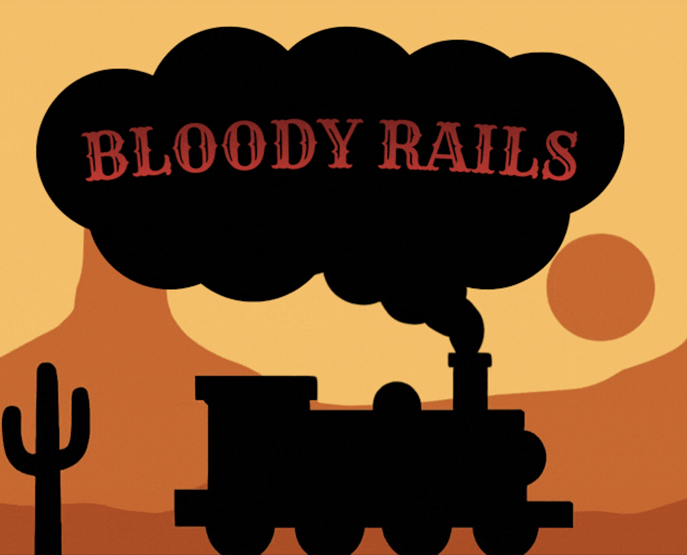
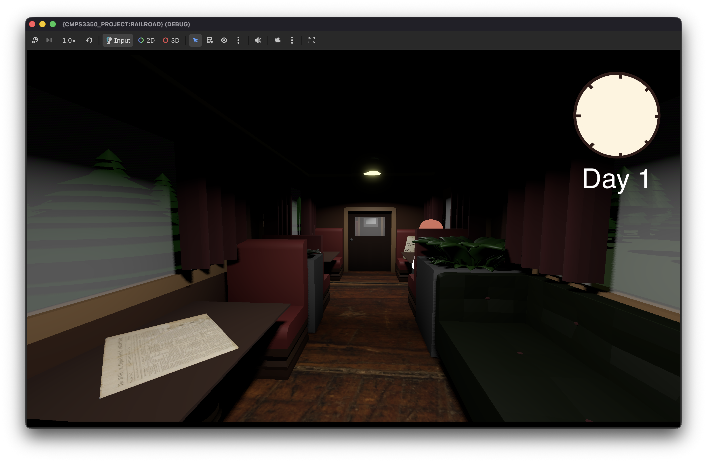
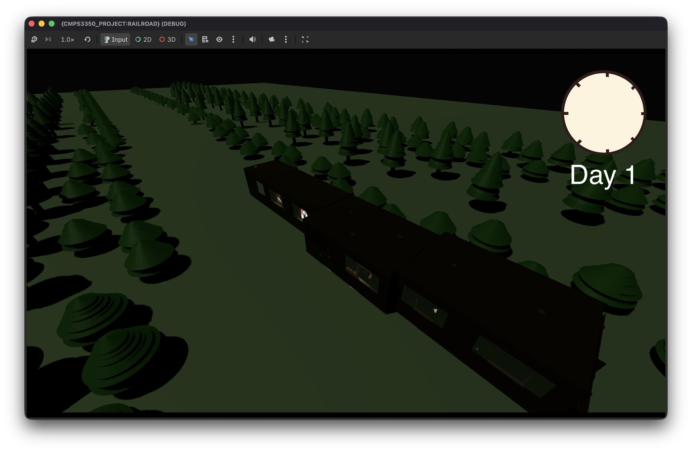
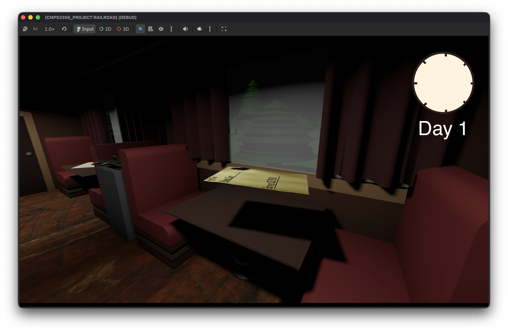
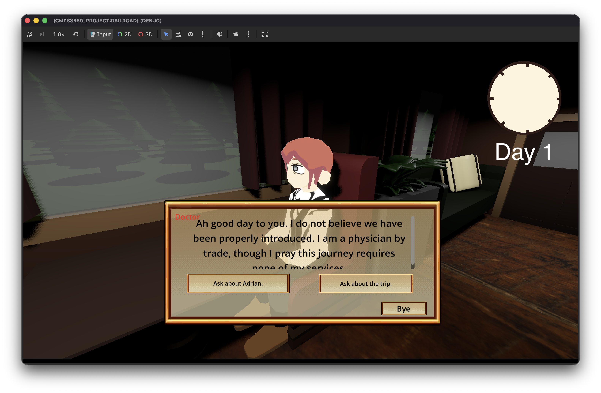
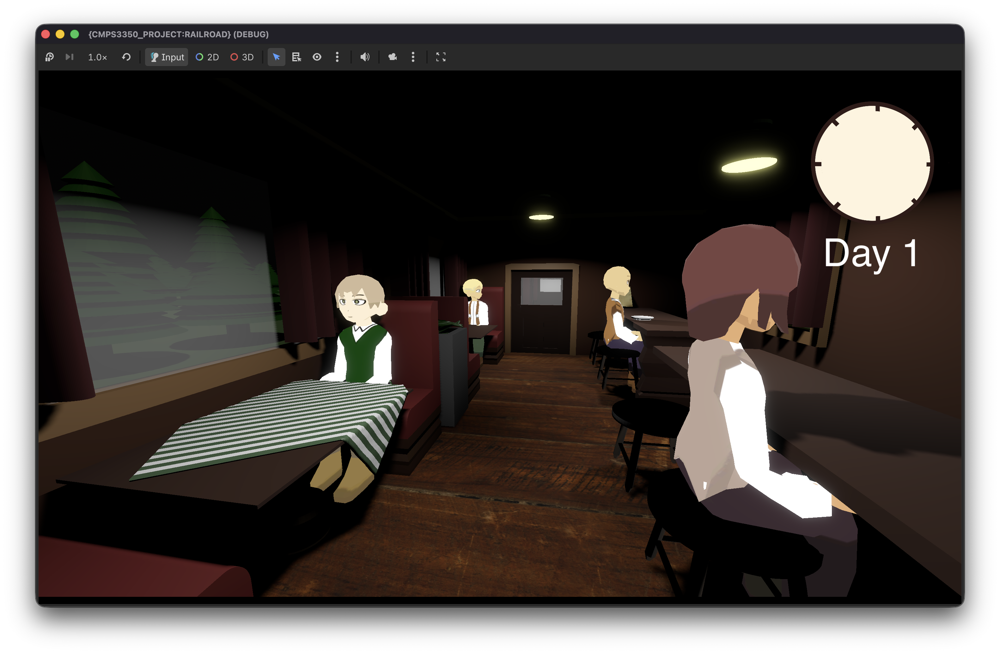
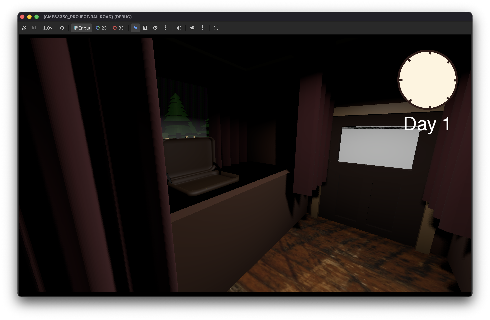
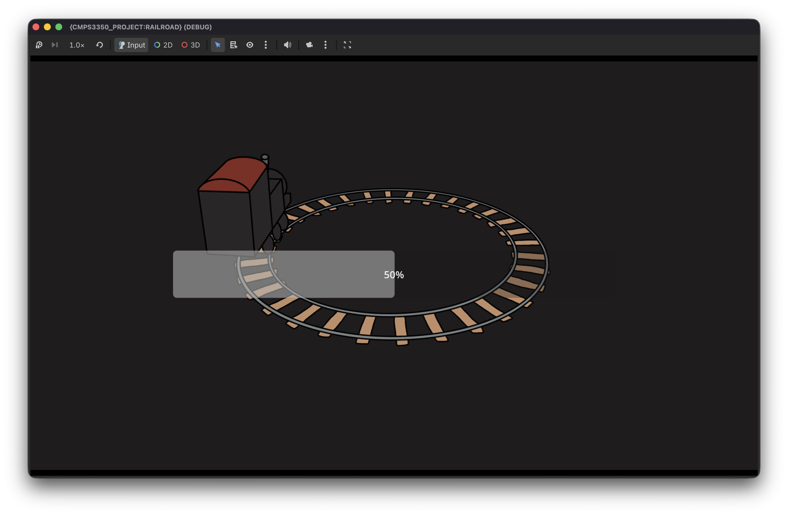

Group project for Software Engineering
Bloody
Rails
A first-person investigation game set aboard a passenger train in the late 1800s.
Find the truth before the final stop.

On board
A case unfolding between stations.
Move through the passenger cars, speak with the people aboard, and follow the evidence.

The story
Five days. One murder to solve.
Before the train reaches its final stop, the player must question suspects, collect clues, and take notes to discover who murdered Adrian.
On the train
- WS
- Move forward and back
- E
- Interact
- Enter
- Advance dialogue
- Tab
- Open or close notebook
Inside the train
Gameplay captures from the current build, from the forest outside to conversations on board.






My contribution
A path from feature work to a stable build.
I handled DevOps, backend work, and game configuration, and developed the one-way integration ladder from feature branches through THE RING, MUDPIT, and POND to MAIN.
I’m continuing development beyond the class MVP to expand and complete the game.
The integration ladder
Changes move forward through the team’s development path.
- Feature branches Build features in isolation.
- THE RING Check how completed features work together.
- MUDPIT Make major changes in the working build.
- POND Handle QA and polish.
- MAIN Keep the stable release.
Project timeline
From class MVP to the next build.
-
Spring 2026: Software Engineering MVP
The team built Bloody Rails as a group project for my Software Engineering class and presented it as the class MVP.
-
In progress
Expanding beyond the MVP
I’m continuing development to bring the game closer to a complete experience.
A group project.
- Audrey Flores
- Fernando Rodriguez
- Brooklyn Stitt
- Shanelle Malanum
- Shelsey Melgar Pineda